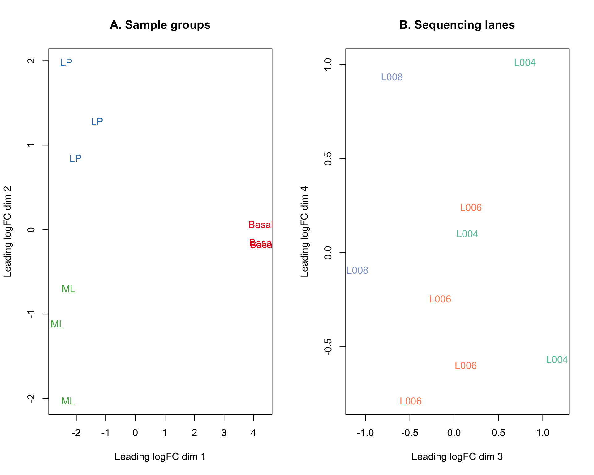
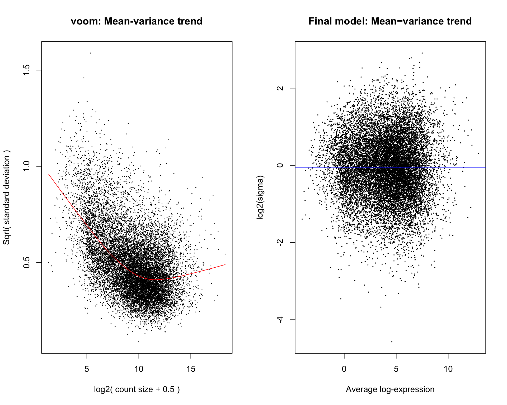
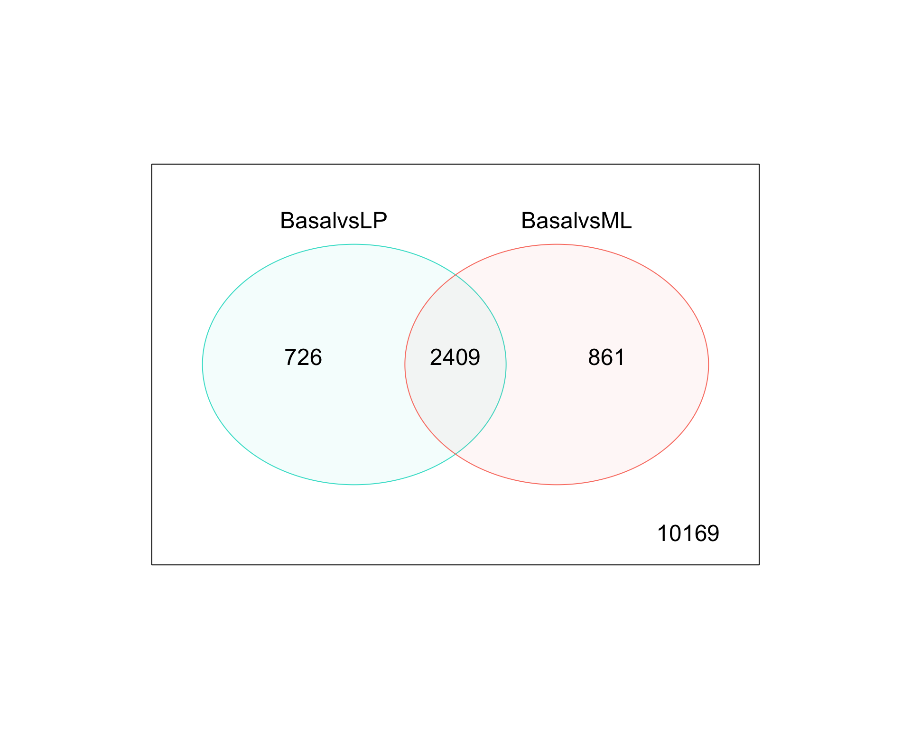
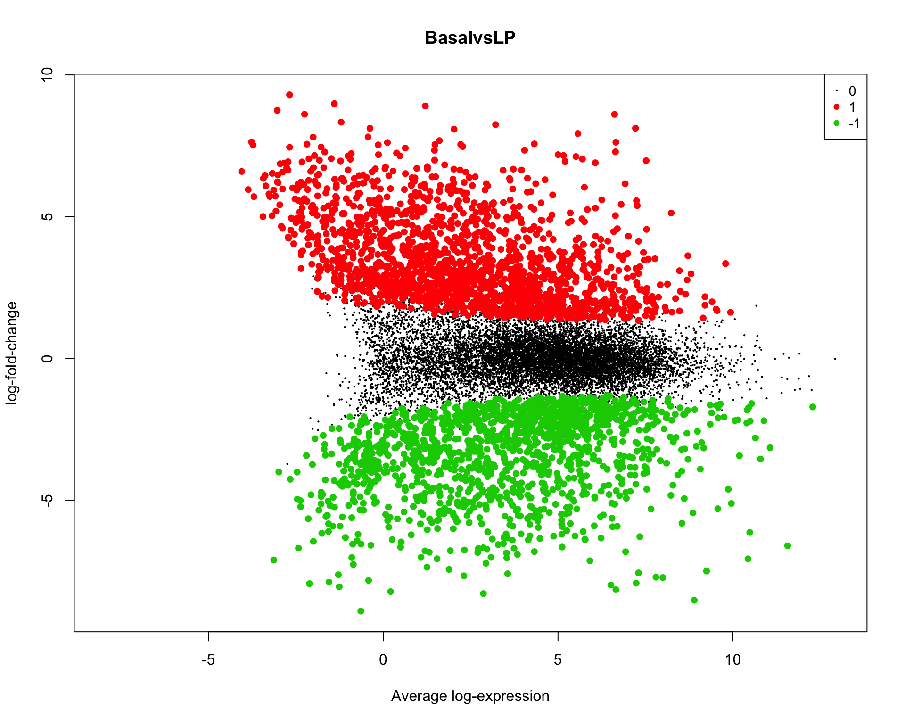
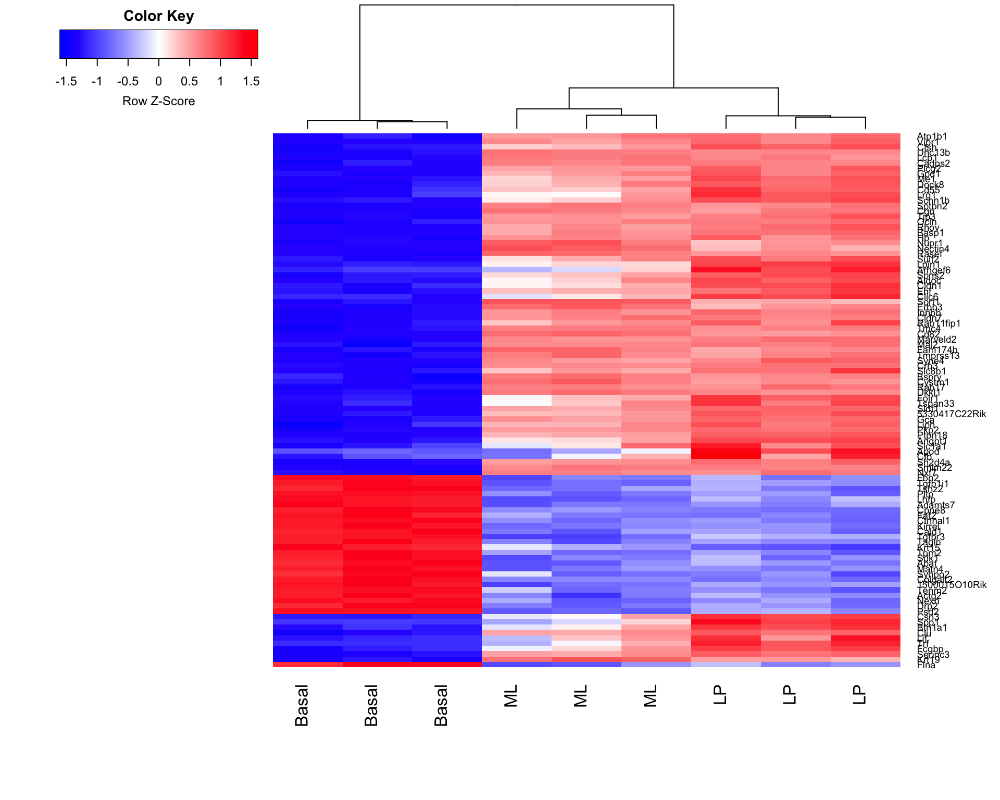

Try new paper (https://www.bioconductor.org/help/workflows/RNAseq123/)
library(limma)
library(Glimma)
library(edgeR)
library(Mus.musculus)Loading required package: AnnotationDbi
Attaching package: 'AnnotationDbi'The following object is masked from 'package:plotly':
selectThe following object is masked from 'package:dplyr':
selectLoading required package: OrganismDbiLoading required package: GenomicFeaturesWarning: package 'GenomicFeatures' was built under R version 3.3.3No methods found in "RSQLite" for requests: dbGetQueryLoading required package: GO.dbLoading required package: org.Mm.eg.dbLoading required package: TxDb.Mmusculus.UCSC.mm10.knownGeneurl <- "https://www.ncbi.nlm.nih.gov/geo/download/?acc=GSE63310&format=file"
utils::download.file(url, destfile="GSE63310_RAW.tar", mode="wb")
utils::untar("GSE63310_RAW.tar", exdir = ".")
files <- c("GSM1545535_10_6_5_11.txt", "GSM1545536_9_6_5_11.txt", "GSM1545538_purep53.txt",
"GSM1545539_JMS8-2.txt", "GSM1545540_JMS8-3.txt", "GSM1545541_JMS8-4.txt",
"GSM1545542_JMS8-5.txt", "GSM1545544_JMS9-P7c.txt", "GSM1545545_JMS9-P8c.txt")
for(i in paste(files, ".gz", sep=""))
R.utils::gunzip(i, overwrite=TRUE)
files <- c("GSM1545535_10_6_5_11.txt", "GSM1545536_9_6_5_11.txt",
"GSM1545538_purep53.txt", "GSM1545539_JMS8-2.txt",
"GSM1545540_JMS8-3.txt", "GSM1545541_JMS8-4.txt",
"GSM1545542_JMS8-5.txt", "GSM1545544_JMS9-P7c.txt",
"GSM1545545_JMS9-P8c.txt")
read.delim(files[1], nrow=5) EntrezID GeneLength Count
1 497097 3634 1
2 100503874 3259 0
3 100038431 1634 0
4 19888 9747 0
5 20671 3130 1x <- readDGE(files, columns=c(1,3))
samplenames <- substring(colnames(x), 12, nchar(colnames(x)))
colnames(x) <- samplenames
group <- as.factor(c("LP", "ML", "Basal", "Basal", "ML", "LP", "Basal", "ML", "LP"))
x$samples$group <- group
lane <- as.factor(rep(c("L004","L006","L008"), c(3,4,2)))
x$samples$lane <- lane
x$samples files group lib.size norm.factors lane
10_6_5_11 GSM1545535_10_6_5_11.txt LP 32863052 1 L004
9_6_5_11 GSM1545536_9_6_5_11.txt ML 35335491 1 L004
purep53 GSM1545538_purep53.txt Basal 57160817 1 L004
JMS8-2 GSM1545539_JMS8-2.txt Basal 51368625 1 L006
JMS8-3 GSM1545540_JMS8-3.txt ML 75795034 1 L006
JMS8-4 GSM1545541_JMS8-4.txt LP 60517657 1 L006
JMS8-5 GSM1545542_JMS8-5.txt Basal 55086324 1 L006
JMS9-P7c GSM1545544_JMS9-P7c.txt ML 21311068 1 L008
JMS9-P8c GSM1545545_JMS9-P8c.txt LP 19958838 1 L008max(x$samples$lib.size)/min(x$samples$lib.size) # Interestingly, this example data has 3.792939 ratio (similar to ratio in honeybees)![1] 3.797567geneid <- rownames(x)
genes <- select(Mus.musculus, keys=geneid, columns=c("SYMBOL", "TXCHROM"), keytype="ENTREZID")'select()' returned 1:many mapping between keys and columnsgenes <- genes[!duplicated(genes$ENTREZID),]
x$genes <- genes
xAn object of class "DGEList"
$samples
files group lib.size norm.factors lane
10_6_5_11 GSM1545535_10_6_5_11.txt LP 32863052 1 L004
9_6_5_11 GSM1545536_9_6_5_11.txt ML 35335491 1 L004
purep53 GSM1545538_purep53.txt Basal 57160817 1 L004
JMS8-2 GSM1545539_JMS8-2.txt Basal 51368625 1 L006
JMS8-3 GSM1545540_JMS8-3.txt ML 75795034 1 L006
JMS8-4 GSM1545541_JMS8-4.txt LP 60517657 1 L006
JMS8-5 GSM1545542_JMS8-5.txt Basal 55086324 1 L006
JMS9-P7c GSM1545544_JMS9-P7c.txt ML 21311068 1 L008
JMS9-P8c GSM1545545_JMS9-P8c.txt LP 19958838 1 L008
$counts
Samples
Tags 10_6_5_11 9_6_5_11 purep53 JMS8-2 JMS8-3 JMS8-4 JMS8-5
497097 1 2 342 526 3 3 535
100503874 0 0 5 6 0 0 5
100038431 0 0 0 0 0 0 1
19888 0 1 0 0 17 2 0
20671 1 1 76 40 33 14 98
Samples
Tags JMS9-P7c JMS9-P8c
497097 2 0
100503874 0 0
100038431 0 0
19888 1 0
20671 18 8
27174 more rows ...
$genes
ENTREZID SYMBOL TXCHROM
1 497097 Xkr4 chr1
2 100503874 Gm19938 <NA>
3 100038431 Gm10568 <NA>
4 19888 Rp1 chr1
5 20671 Sox17 chr1
27174 more rows ...Transform and remove low counts
cpm <- cpm(x)
lcpm <- cpm(x, log=TRUE)
keep.exprs <- rowSums(cpm>1)>=3
x <- x[keep.exprs,, keep.lib.sizes=FALSE]
dim(x)[1] 14165 9x <- calcNormFactors(x, method = "TMM")Create MDS plots
library(RColorBrewer)
lcpm <- cpm(x, log=TRUE)
par(mfrow=c(1,2))
col.group <- group
levels(col.group) <- brewer.pal(nlevels(col.group), "Set1")
col.group <- as.character(col.group)
col.lane <- lane
levels(col.lane) <- brewer.pal(nlevels(col.lane), "Set2")
col.lane <- as.character(col.lane)
plotMDS(lcpm, labels=group, col=col.group)
title(main="A. Sample groups")
plotMDS(lcpm, labels=lane, col=col.lane, dim=c(3,4))
title(main="B. Sequencing lanes")
#glMDSPlot(lcpm, labels=paste(group, lane, sep="_"), groups=x$samples[,c(2,5)], launch=FALSE)Create design matrix. There are many ways to setup a design matrix. Here, we removed the intercept from group (the first factor), but kept the intercept from lane. This allows us to do contrasts with group more easily.
design <- model.matrix(~0+group+lane)
colnames(design) <- gsub("group", "", colnames(design))We can look at contrasts
contr.matrix <- makeContrasts(
BasalvsLP = Basal-LP,
BasalvsML = Basal - ML,
LPvsML = LP - ML,
levels = colnames(design))
contr.matrix Contrasts
Levels BasalvsLP BasalvsML LPvsML
Basal 1 1 0
LP -1 0 1
ML 0 -1 -1
laneL006 0 0 0
laneL008 0 0 0par(mfrow=c(1,2))
v <- voom(x, design, plot=TRUE)
vAn object of class "EList"
$genes
ENTREZID SYMBOL TXCHROM
1 497097 Xkr4 chr1
6 27395 Mrpl15 chr1
7 18777 Lypla1 chr1
9 21399 Tcea1 chr1
10 58175 Rgs20 chr1
14160 more rows ...
$targets
files group lib.size norm.factors lane
10_6_5_11 GSM1545535_10_6_5_11.txt LP 29409426 0.8957309 L004
9_6_5_11 GSM1545536_9_6_5_11.txt ML 36528591 1.0349196 L004
purep53 GSM1545538_purep53.txt Basal 59598629 1.0439552 L004
JMS8-2 GSM1545539_JMS8-2.txt Basal 53382070 1.0405040 L006
JMS8-3 GSM1545540_JMS8-3.txt ML 78175314 1.0323599 L006
JMS8-4 GSM1545541_JMS8-4.txt LP 55762781 0.9223424 L006
JMS8-5 GSM1545542_JMS8-5.txt Basal 54115150 0.9836603 L006
JMS9-P7c GSM1545544_JMS9-P7c.txt ML 23043111 1.0827381 L008
JMS9-P8c GSM1545545_JMS9-P8c.txt LP 19525423 0.9792607 L008
$E
Samples
Tags 10_6_5_11 9_6_5_11 purep53 JMS8-2 JMS8-3 JMS8-4
497097 -4.293244 -3.869026 2.522753 3.302006 -4.481286 -3.993876
27395 3.875010 4.400568 4.521172 4.570624 4.322845 3.786547
18777 4.707695 5.559334 5.400569 5.171235 5.627798 5.081794
21399 4.784462 4.741999 5.374548 5.130925 4.848030 4.944024
58175 3.943567 3.294875 -1.767924 -1.880302 2.993289 3.357379
Samples
Tags JMS8-5 JMS9-P7c JMS9-P8c
497097 3.306782 -3.204336 -5.287282
27395 3.918878 4.345642 4.132678
18777 5.080061 5.757404 5.150470
21399 5.158292 5.036933 4.987679
58175 -2.114104 3.142621 3.523290
14160 more rows ...
$weights
[,1] [,2] [,3] [,4] [,5] [,6] [,7]
[1,] 1.183974 1.183974 20.526779 20.97747 1.773562 1.217142 21.125740
[2,] 20.879554 26.561871 31.596323 29.66102 32.558344 26.745293 29.792090
[3,] 28.003202 33.695540 34.845507 34.45673 35.148529 33.550527 34.517259
[4,] 27.670233 29.595778 34.901302 34.43298 34.841349 33.159425 34.493456
[5,] 19.737381 18.658333 3.184207 2.62986 24.191635 24.014937 2.648747
[,8] [,9]
[1,] 1.183974 1.183974
[2,] 21.900102 17.150677
[3,] 31.440457 25.228325
[4,] 26.136796 24.502247
[5,] 13.149278 14.351930
14160 more rows ...
$design
Basal LP ML laneL006 laneL008
1 0 1 0 0 0
2 0 0 1 0 0
3 1 0 0 0 0
4 1 0 0 1 0
5 0 0 1 1 0
6 0 1 0 1 0
7 1 0 0 1 0
8 0 0 1 0 1
9 0 1 0 0 1
attr(,"assign")
[1] 1 1 1 2 2
attr(,"contrasts")
attr(,"contrasts")$group
[1] "contr.treatment"
attr(,"contrasts")$lane
[1] "contr.treatment"vfit <- lmFit(v, design)
vfit <- contrasts.fit(vfit, contrasts=contr.matrix)
efit <- eBayes(vfit)
plotSA(efit, main="Final model: Mean−variance trend")
For a quick look at differential expression levels, the number of significantly up- and down-regulated genes can be summarised in a table. Significance is defined using an adjusted p-value cutoff that is set at 5% by default. For the comparison between expression levels in basal and LP, 4,127 genes are found to be down-regulated in basal relative to LP and 4,298 genes are up-regulated in basal relative to LP – a total of 8,425 DE genes.
summary(decideTests(efit)) BasalvsLP BasalvsML LPvsML
-1 4127 4338 2895
0 5740 5655 8825
1 4298 4172 2445Some studies require more than an adjusted p-value cut-off. For a stricter definition on significance, one may require log-fold-changes (log-FCs) to be above a minimum value. The treat method can be used to calculate p-values from empirical Bayes moderated t-statistics with a minimum log-FC requirement. The number of differentially expressed genes are reduced to a total of 3,135 DE genes for basal versus LP, 3,270 DE genes for basal versus ML, and 385 DE genes for LP versus ML when testing requires genes to have a log-FC that is significantly greater than 1 (equivalent to a 2-fold difference between cell types on the original scale).
tfit <- treat(vfit, lfc=1)
dt <- decideTests(tfit)
summary(dt) BasalvsLP BasalvsML LPvsML
-1 1417 1512 203
0 11030 10895 13780
1 1718 1758 182Genes that are DE in multiple comparisons can be extracted using the results from decideTests, where 0s represent genes that are not DE, 1s represent genes that are up-regulated, and -1s represent genes that are down-regulated. A total of 2,409 genes are DE in both basal versus LP and basal versus ML, twenty of which are listed below. The write.fit function can be used to extract and write results for all three comparisons to a single output file.
de.common <- which(dt[,1]!=0 & dt[,2]!=0)
length(de.common)[1] 2409head(tfit$genes$SYMBOL[de.common], n=20) [1] "Xkr4" "Rgs20" "Cpa6" "Sulf1"
[5] "Eya1" "Msc" "Sbspon" "Pi15"
[9] "Crispld1" "Kcnq5" "Ptpn18" "Arhgef4"
[13] "2010300C02Rik" "Aff3" "Npas2" "Tbc1d8"
[17] "Creg2" "Il1r1" "Il18r1" "Il18rap" vennDiagram(dt[,1:2], circle.col=c("turquoise", "salmon"))
We can examine genes from top to bottom
basal.vs.lp <- topTreat(tfit, coef=1, n=Inf)
basal.vs.ml <- topTreat(tfit, coef=2, n=Inf)
head(basal.vs.lp) ENTREZID SYMBOL TXCHROM logFC AveExpr t P.Value
12759 12759 Clu chr14 -5.442877 8.857907 -33.44429 3.990899e-10
53624 53624 Cldn7 chr11 -5.514605 6.296762 -32.94533 4.503694e-10
242505 242505 Rasef chr4 -5.921741 5.119585 -31.77625 6.063249e-10
67451 67451 Pkp2 chr16 -5.724823 4.420495 -30.65370 8.010456e-10
228543 228543 Rhov chr2 -6.253427 5.486640 -29.46244 1.112729e-09
70350 70350 Basp1 chr15 -6.073297 5.248349 -28.64890 1.380545e-09
adj.P.Val
12759 2.703871e-06
53624 2.703871e-06
242505 2.703871e-06
67451 2.703871e-06
228543 2.703871e-06
70350 2.703871e-06head(basal.vs.ml) ENTREZID SYMBOL TXCHROM logFC AveExpr t P.Value
242505 242505 Rasef chr4 -6.510470 5.119585 -35.49093 2.573575e-10
53624 53624 Cldn7 chr11 -5.469160 6.296762 -32.52520 4.978446e-10
12521 12521 Cd82 chr2 -4.667737 7.070963 -31.82187 5.796191e-10
71740 71740 Nectin4 chr1 -5.556046 5.166292 -31.29987 6.760578e-10
20661 20661 Sort1 chr3 -4.908119 6.705784 -31.23083 6.761331e-10
15375 15375 Foxa1 chr12 -5.753884 5.625064 -28.34612 1.487280e-09
adj.P.Val
242505 1.915485e-06
53624 1.915485e-06
12521 1.915485e-06
71740 1.915485e-06
20661 1.915485e-06
15375 2.281914e-06To summarise results for all genes visually, mean-difference plots, which display log-FCs from the linear model fit against the average log-CPM values can be generated using the plotMD function, with the differentially expressed genes highlighted.
plotMD(tfit, column=1, status=dt[,1], main=colnames(tfit)[1], xlim=c(-8,13))
A heatmap is created for the top 100 DE genes (as ranked by adjusted p-value) from the basal versus LP contrast using the heatmap.2 function from the gplots package. The heatmap correctly clusters samples into cell type and rearranges the order of genes to form blocks of similar expression. From the heatmap, we observe that the expression of ML and LP samples are very similar for the top 100 DE genes between basal and LP.
library(gplots)
basal.vs.lp.topgenes <- basal.vs.lp$ENTREZID[1:100]
i <- which(v$genes$ENTREZID %in% basal.vs.lp.topgenes)
mycol <- colorpanel(1000,"blue","white","red")
heatmap.2(v$E[i,], scale="row", labRow=v$genes$SYMBOL[i], labCol=group, col=mycol, trace="none", density.info="none", margin=c(8,6), lhei=c(2,10), dendrogram="column")